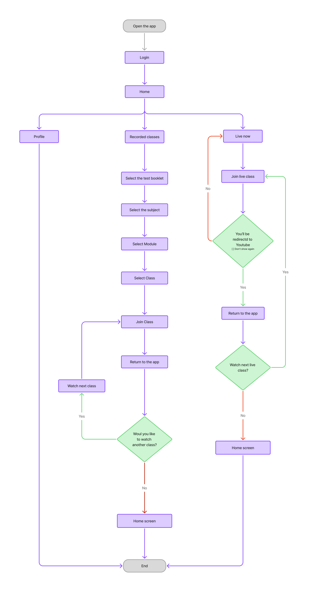
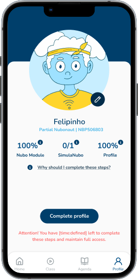
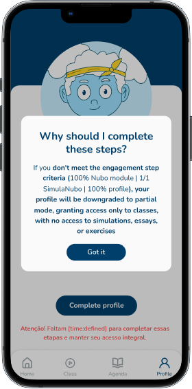
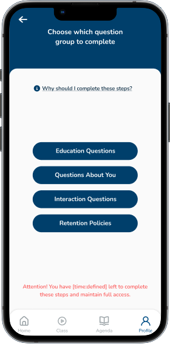
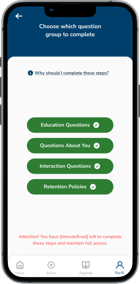
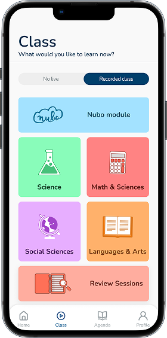
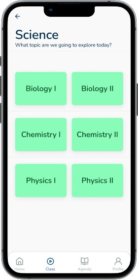
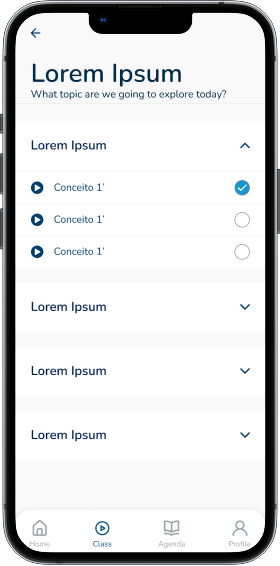
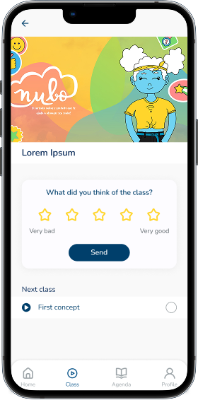
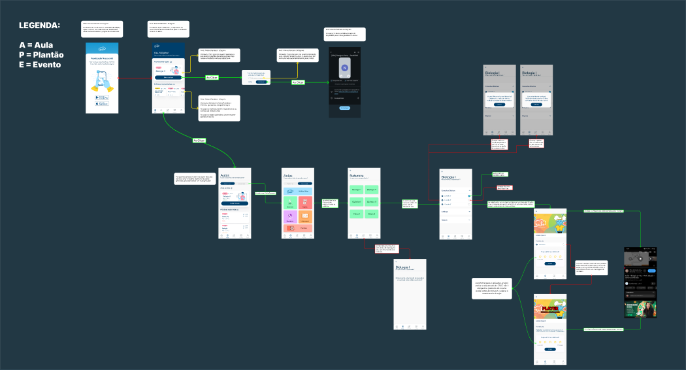

NUBO / CASE STUDY 02
Redesigning the Nubo App
Helping students find live classes, complete their profiles, and catch up on recorded lessons through three incremental releases over three months.

- My role
- Sole UX/UI designer
- Timeline
- Three months, delivered incrementally
- Team
- CTO, two developers, and Growth, with input from the education team
Context & Problem
Nubo is a free online education initiative helping students prepare for Brazil’s ENEM entrance exam. Students balancing school, work, and exam preparation needed a clear way to join a live class or study later.
The existing experience made those tasks harder: live content was difficult to locate, redirects to external platforms were abrupt, and recorded lessons needed clearer organization. Students also needed guidance to complete the information required after admission.
Internal Growth/Data reporting described roughly 90% abandonment during 2024, with around 16 students still active at the end of the year. This was context for the broader engagement challenge; it did not establish interface friction as its only cause.
My Role & Delivery
As the sole designer, I owned the UX/UI work, from mapping flows and exploring wireframes to designing the final interfaces. I worked with the CTO and two developers in weekly meetings, aligned requirements with Growth, and incorporated input from the education team when needed.
The work progressed through smaller deliveries over three months. The release order was:
Designing for Helena

Helena, our student persona, balances her final year of high school with a part-time job and preparation for ENEM. Her limited study time helped focus the design on direct access, clear instructions, and flexible learning.
- Join quickly: identify a live class without searching through several screens.
- Understand the next step: see which profile requirements are still pending.
- Study on her schedule: find recorded lessons when she cannot attend live.
Priorities & Trade-offs
I prioritized the paths students needed most: entering a live class, completing their profile, and finding a recording. For live classes, the design target was access in three taps or fewer, informed by desk research of comparable learning apps.
We explored an Agenda for classes, exam simulations, and essay deadlines, but postponed it. Integration with students’ phone calendars, frequent class cancellations, and limited development time and budget made it a larger commitment. A list of upcoming broadcasts on the Home screen addressed the immediate need with a smaller scope.

Mapping the Experience
I mapped the paths between Home, classes, and Profile to make navigation decisions visible during discussions with engineering. This helped connect the individual releases into one experience.

Explorations & Wireframes
Mid-fidelity explorations helped us discuss content hierarchy and implementation scope before final UI design. These artifacts include ideas that were postponed, such as the Agenda, alongside the paths developed for the releases.


01 — Home & Live Classes
The first release made joining a live class the primary action on Home. The design brought the current class into view and made the transition to an external platform explicit.
- Live class first: a prominent card pairs class information with a clear “Join the class” action.
- Upcoming broadcasts: a list helps students see what is coming next that day.
- Predictable redirects: a confirmation explains when the student is about to leave Nubo for an external class platform.


02 — Complete Your Profile
After admission, students still needed to provide additional information. The second release made those requirements visible from Profile, explained why they mattered, and organized the questions into manageable groups.




- Four question groups: Education, About You, Interaction, and Retention Policies organize the 20 post-admission questions.
- Visible progress: completion indicators show what is pending, while green states and checkmarks identify finished groups.
- Clear expectations: an explanation connects profile completion with the requirements for full access to Nubo activities.
Profile details and photo
The Profile designs also show the student’s name, registration number, and enrollment status. The photo-editing flow offers a camera, gallery, or mascot avatar option. These screens support personal identification alongside the separate question-completion flow.


03 — Recorded Lessons
The third release focused on students who needed to study outside the live class schedule. I organized the journey from subject categories to lesson content and the player, giving each screen a clear next step.




- Recognizable categories: subject names, illustrations, and color help distinguish areas of study.
- Progressive disclosure: students choose a category, explore its lessons, and then open the content.
- Flexible access: recordings provide a route back to learning when a student misses the live session.
Handoff & Collaboration
I documented the navigation flows, interaction rules, and interface states to support implementation. Weekly meetings with the CTO and two developers kept design decisions and delivery aligned.

Outcomes & Evidence
- 60% profile completion: the reported share of students who completed their profiles. The measurement period was not documented in the information available for this case.
- Approximately 45% reduction in engagement decline: reported by Growth and the CTO for 2025 compared with 2024.
- No confusion reports received at launch: a qualitative signal from the feedback available to the team, rather than a measured task-success rate.
- Positive student feedback: messages praised the app’s organization and the ability to keep up outside the regular class schedule.
The quantitative outcomes were shared through internal reporting and discussions with the CTO. The engagement comparison describes a broader product outcome; it does not isolate the effect of the redesign from other changes. Profile completion is reported as a completion rate, not an increase over a baseline.

What I Learned
- Sequence work around student tasks. Smaller releases let us address live access, profile requirements, and recorded learning as distinct problems within one product.
- Consider the ongoing cost of a feature. The Agenda decision involved calendar integration and schedule changes as well as the initial interface.
- Make requirements understandable. Grouping profile questions and showing completed states gives students a clearer path through institutional requirements.
What I would improve next
I would define measurement windows and event tracking before release, then test the main tasks with students: joining a live class, finishing a profile question group, and finding a recorded lesson. That would help distinguish navigation improvements from broader engagement changes and guide the next iteration with stronger evidence.